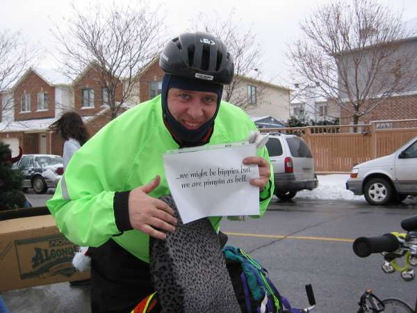

another (?) WVO 'Vette blog | |
août 18, 2003A new era The 'vette is now under new 0wnership, it was sold 2 weeks ago to a veggie enthusiast from Olympia, WA. According to my calculations, it's been almost 5 months since my last entry, and lots has happened in the meanwhile. Towards the end of my work in Mukilteo, the 'vette decided she wanted to stay and work in bioinformatics. By virtue of revolt, she refused to start up. I went to New Orleans for a week, as an extreme application of the kama sutric mechanic's First Law of auto repair, which has served me well in the past: If it doesn't work, take a walk. Meditate. When you return, it will work. Obviously, you say, the 'vette's superiour technology, which probably originated from Jupiter, requires a higher plane of consciousness. So of course she didn't start after a week of First Law application, so I was required to appeal to higher powers. Luckily, Chris was working the day Omar and I went to rescue the 'vette. I discovered that the Second Law involves standing slackjawed while Chris exercises his mad diesel ninja skills. The problem was eventually traced to a teeny air leak in one of the fuel lines. I'm not sure why this happened, maybe Greasel knows. I stole the longest line in the car, but had to wire the veggie system out of the loop and pilot the 'vette home on diesel. And there she sat for several months, while I biked everywhere and daily put off the one hour task of replacing the fuel lines. My biking ubertechnique was refined to a sharp point, suitable for launch from an atlatl. I thought about how much I've evangelized veggie powered cars, how much energy I put into the project. I thought about how I was on CNN because the car I drive runs on vegetable oil rather than gasoline. And I compared these things to my exuberant feelings I experience while riding my bicycle. Sadly, I only rode my bicycle to Combimatrix in Mukilteo once, though it is only 20 miles. The rest of the time, I drove a veggie powered car or carpooled, so it's OK, right? No, it's not alright. Driving a veggie car is not a paradigm shift from Mr. Ford's vision. A world of 7 billion people requires efficient use of resources. I embrace efficiency, will continue to champion its' cause. Cyclists get on the news when there's an event such as the STP or Bike To Work Day. For the other hundreds of days that we're out there, we get spit on. Americans are dying in Iraq, and people in Seattle are driving their single occupant vehicles to the gym. The solution is twofold: impeach Bush, and open the eyes of the middle/upper class. I'm not sure which is the more difficile of the tasks. My favorite solution for the latter is economic forcing. When gasoline/diesel becomes 5USD/gallon and bicycles are subsidized by the government, flowers and spotted owls continent-wide will raise their petals and wings high for their raison de résistance, as the yuppies of the country, and you know who you are, recalculate their budgets. Change isn't easy, and will take time. In the meantime, here are some things I'd like to see as part of public school curriculum:
So, the 'vette is gone. I put new fuel lines in and had a few last hurrah flights for old times sake before Heidi piloted it away from my life. I do still think that veggie/bioD systems are a good intermediate (10-20 years) step towards sustainable long range transportation. I myself will be obtaining another diesel vehicle in the future for long trips which bicycles, busses, or trains can not get me to. I had a nice long talk with some local biodiesel enthusiaasts and businessmen at HempFest this weekend, it is still very exciting stuff. Stay tuned. But for now, if you're driving a vehicle unsafely, listen for my Air Zounds horn. And if you think a car is required for everyday transportation needs, remember that I resemble Jesus and I bike for your sins. | |
mars 24, 2003I forgot to mention my meeting of local troubadour Greg Spence Wolf at Hopvine the other week. It was local songwriter night, and I met Greg who happened to mention that one of his latest songs is titled "BioDiesel". I bought one of his CDs (support your local artists!), but sadly his biodiesel fight song is not on it. Luckily, he offered to give a live rendition, and the Vette was parked right outside! So he busted out his guitar, and gave a rousing serenade to the Beige Beauty. Some of the lyrics of this song can be found at his website. After a few choruses, I was so touched that I had to also bust out my soprano sax, which provided jovial backup until a neighboor in the hood kindly asked us to SHUT UP. I hope this experience sprouts a whole new subgenre of biofuel music. In Vette news, the glow plugs seem pretty much gone, by my analysis. Sean dug up two of the spares from the pile of parts which accompanied the Vette, so hopefully those will solve the major starting woes she's been having. Unfortunately, I didn't feel confident enough in her cold weather ability to take her up to Mt. Baker this weekend, and did it on (ick) gasoline. I'll have a glow plug swapping party this week. Beautiful Baker, fresh powder, wonderful friends. Only veggie power could have made it better. | |
mars 16, 2003Area Man "Forget brewing beer, a Seattle Man is brewing his own fuel for his car!"Those were the words of the King5 news anchors as they incorrectly introduced me as a non-beer brewing nutcase. The response to this several minute coverage of An Area Man has been so overwhelming that I'll be requiring all autograph requests to come with a prepaid FedEx envelope. Omar was awesome enough to encode the spot in quicktime, so we can all enjoy it here (3.0MB, quicktime). This was even aired on CNN, go WVO propaganda! Things have been just absolutely crazy lately, but even with little time available to put towards the veggie operation, the Vette has been cranking on veggie at a steady rate, she loves it. She also holds my EMR-in-a-vacuum speed cannondale with ease, providing a nice pedal + veggie powered multitransportation duality. | |
mars 02, 2003The Daily Driver I never liked that term, since it subtly implies driving a vehicle every day rather than using cleaner sources of transportation for routine needs. But with the start of work last week (yay!) (and garrr!), and the fact that I still haven't found a bus route to Mukilteo which takes less than 2.5 hours, the vette got out 5 days last week. She's stalling on veggie less, but not zero, since I wrapped a veggie line in electrical tape. It's time for that line to go. It'll be tough replacing the line in the 3-way hose, so I'll probably just splice on a section of new (and more flexible) hose.Last Sunday (Sunday SUNDAY!) was the first Seattle Biodiesel Forum, held on Phinney Ridge. The event started as a GTG (Get ToGether) plan on a TDIclub forum about a month ago, and evolved into an event with presentations and everything. It was really exciting to see the 150 or so people out there who are all totally stoked about biofuels. We need more aggressive evangalism. I talked to some really cool people about homebrew biodiesel, and veggie conversions. The 'vette was the only thing out there running WVO as far as I saw, but I talked with some folks who are planning conversions soon. Some of them got my card with my URL, so you people should be contacting me right now! Especially that dude who gave the 'vette an unofficial "Coolest car here" award, I want my metal medal! Wow, it's been 2 weeks since the last entry, things have been crazy. Just after the last episode, I picked up a hypermegabadass Cannondale aluminum road bike with tricked out wheels for 75 bucks at the bike swap. I promptly cut down and inverted the drop bars into bullhorns; this bike is faster than Speedy Gonzales. That's two things i've fallen madly in love with in the past few weeks. Friday night I volunteered at the bike parking garage of the Seattle Bike Expo for BikeWorks, and had the opportunity to test ride both a fixed gear and an amazingly well crafted tall bike. yay for bikes! | |
fevrier 15, 2003A Cheventure And what a fine Chevette Adventure. Nikita was asked on a workday to sing backup vocals on a Hindi religious album at a studio in Index (pop. 200?), WA, which is at the foot of some rather mighty montañas. It's easy to tell other people that they're silly for even considering not taking advantage of opportunities like this for foolish fear of repurcussions such as "firings". The 'Vette + driver package was gallanty at her disposal of course, so with a pile of hummus sandwiches made of free bread and a thermos of tea I headed over to make the pickup. I'd hoped that my electrical tape surgery on a suspected airleaking fuel line would destroy the stalling-on-veggie problem, but as I searched for the drop zone, I had to pull a quick turnaround, and the engine slowed enough that it stalled. Without even consulting past my brain's limbic system, my body immediately popped the clutch out, and she was jump started back to life, happy as a greased clam. I paused for a second to reflect on the level to which I've become one with the 'Vette. Any closer, and I'll need to employ quantum gravity in order to explain the differences between us. The pickup was made, and we headed out. The time at the studio was full of adventures like playing soprano sax out by a babbling brook under the watchful gaze of Mt. Index, and singing into a microphone shaped like a human head (and refusing to refer to it in the third person). Apparently I'll get credit on the album for some weak "Ohms" I delivered to the head (and I don't mean <10k resistors). On the way back, after taking on a load of fuel consisting of about 29 standard cups of coffee, I discovered that insta-love is indeed possible. Those in doubt have never heard the phrase "You know, rather than driving back to Seattle, I'd really rather just sleep in the Chevette." be still, my beating heart. That was a paraphrase, since the actual statement is obviously too dangerous to be kept in upper memory space. At 3am I heard "You know, The Chevette is amazingly comfortable". By 5am we were headed out. You know, I don't think phrases have anything to do with it, after all. Still. The 'vette is still at a remote location. After the No War march today, I just continued marching back home, saxophone-a-blazing the whole way. Go Metro power! This vietnamese donut oil is just golden. | |
fevrier 09, 2003, part IItotal vegburner miles driven today: 0. No big deal, since I often not drive, but today I had all sorts of different places to go, so it was a designated Metro Challenge Car Free Day. I'll admit to a ride home from the Six Arms from Hal, but that was relatively close to base. Remember, vegoil good, public transport better. Seattle busses really are good, considering the standard american sprawl their routes have been placed atop. The supposedly amazing seattle bike swap happens next Sunday, I hope to append to my minimal full cycle CO2 emission transportation options there. | |
fevrier 09, 2003(veg-powered ski trips)++ I chauffered Stephen and I up to the pass for some icy but clear blue sky snowboarding yesterday. once again the 'vette proved the mettle of its metal, and totally deserves a medal. The veg tank was running low, but between the 'Vette's frugal sipping and a vocal symphony of support, she pulled back into town on veggie the whole way. Idling is still an issue, but Charles of Greasel validated my hypothesis of an air leak in the veggie lines as the culprit. I hope to plug the 'Vette into the debugger this week, and meddle with the badness. After yesterday's trip, the vegtank was running dry, so I made my first foray into the liquid gold we got from the Vietnamese bakery. This stuff was so good it hardly needed filtering, but I did it for the maximization of Chevette Chakra (ed: always filter your veggie!). She runs like a champ on Southeast asian baked goods. Oh, and lainney's coffeeshop makes donuts, with a possible waste veggie stream, w00t! | |
fevrier 04, 2003It is a difficult thing to communicate the joy of driving a WVO 'vette, but this art should help. | |
fevrier 02, 2003Veggie boarding No, it's not the newest snow sport being practiced by those little kids on the hill with funny hats, but Chief Grease Filtering Architect and Grand General of Canola Omar and I took the 'vette out to Crystal a few days ago for some snowboarding. This was the first field trial of the 'vette in snow, and it surpassed all engineering specifications. Of course, the crazy warm winter1 we've had here meant the roads were all clear until the parking lot, but the parking lot did provide a proving ground for that test of maximal de rigeur, the brodie. The 'vette proved a wonderful snowboard transportation device, though Omar's telephone pole lengthed uber carving 29 meter board would have been better carried on the ladder racks of the sweet diesel firetruck I saw on eBay the other day. Powder! 1 Note that a warmer winter or three does not prove that we are currently experiencing anthropogenically induced global warming. However, measuring the amount of CO2 liberated in the too big cylinders of the nations' SUVs proves a lot about why all SUVs should be melted down into more useful things, such as
monoliths, in order to halt possible global warming, and prevent certain future global warming.
| |
janvier 25, 2003I didn't plan on collecting more veggie today, really. I was hanging out with friend Stephen, who is all keen on vegoil and is in the market for a diesel project car, and whose website looks strikingly like Nick's. We were headed to BikeWorks to work on bikes, when I remembered that Gabe of Taco Junior, a restaurant with artfully created dishes of a Mexican pedigree, said he'd have some oil today. Well, I received strike 3 on that collection, he still hadn't drained his fryer. But I watched a wave of inspiration cross his face, and we all marched over to a cool little Vietnamese grocery/bakery across the street, where he knew the owner. Out back was pure liquid gold in two drums, this stuff was amazing. Gabe gave me a bunch of the 5 gallon oil jugs and even a beer pitcher to scoop with; now the 'vette has about 37 gallons of pure sweet delicious honey fuel of the gods in the back, ready for filtering, as it had settled already. Keep your eyes open for vietnamese bakeries! OK kids, it's time to drop those WVO conversions in, and fill up on B100! There's a long thread here about a biodiesel enthusiast's meeting in seattle for a tentative date of Feb. 23rd at a tentative location on Phinney Ridge. We'll have to watch the growing thread to find out the exact details. i for one, can't wait to get out there and show the prissy little B20 powered tdi drivers what real biofueling is about: getting up to the elbows in grease, with a siphon starting mouthful of WVO straight from the waste barrel. Not that I did that again today during the big scoring run or anything.. | |
janvier 21, 2003returned! I got back to the loving embrace of the Vette's racing seats intact last week. And it's been a good week of vegoiling. A right nice chap named Omar emailed me last week. He lives right nearby in Kirkland, and had installed the Neoteric kit in his VW Rabbit. I had the honor of filling up his first tank of veggie, and a couple of days later he fired it up, with success. Go go go Seattle WVO club! We went out a few days later on a collection mission in the 'Vette. I checked a few grease barrels in the back of restaurants, but they were either empty or full of thick goopy stuff. Finally we hit an Asian restaurant with half a barrel of decent looking stuff, and commenced pumping. We experimented with a little pump which attaches to the shaft of a hand drill. It said "self priming", but I think that was a poor translation from the original "don't even think that this pump is self priming". So I filled the intake hose many many times with oil scooped up with the funnel, getting shoulder deep into the greasy barrel. After laboriously extracting about 5 gallons of mediocre oil, we gave up and moved on. A local independent donut shop had their barrels all locked up, but the girl working there took my number and said maybe they would call me back. Donut oil still remains the elusive grail. She did recommend that we check a pub down the street, and finally we hit the mother lode, with about 25 gallons of liquid gold. Filtering is still proving to be a mess, we started using the cone filters from Neoteric. They're simpler, but they don't filter down to nearly the level which the Greasel filter bags do. Plastic barrels in 5, 15, and 55 gallon sizes were obtained, they had a past life in the coffee flavorings industry, and give off the sweet aromas of hazelnuts and irish cream. | |
decembre 07, 2002, part deuxPerhaps the bonus two revolutions around the roundabout down the street last night weren't enough to clear the veggie from the lines, for the 'vette refused to start this morning. It was crisp and cold last night, near freezing. I cranked her, but got nothing for the first two tries. As I released the key from the starting position on the third try, I came to the frightening realization that the 'Vette had gone insane. Even when I turned off the ignition and removed the key, the starter kept cranking. With visions of burning Chevette dancing in my head, I looked around for the fuse box, then couldn't remember whether the starter circuit has a fuse in it or not ( if the solenoid was stuck, this wouldn't do any good anyhoo. -ed). As I opened the door to go quickly conjure up the proper wrenches to disconnect the battery, she went silent. It was as if the 'Vette needed to say "Look, you may pilot me, you may dump burrito juice in me, but one of us is the dominant partner in this relationship, and it's not you." People smarter than me have been predicting the singularity day when machines finally achieve superior intelligence to mankind. I don't know if anyone forecast that it would come on a foggy Seattle winter's day at the tail end of 2002, with a diesel Chevette as lead actor. I used the "plug in block heater, pour a pot of boiling water on the fuel injector, and light up the glow plugs a few times" emergency starting procedure, and she started up like a stampeding herd of water buffalo. Anyway, now the registration is renewed, and I picked up 5 more gallons of Mexican veggie. I just finished off a burrito I bought at the fuel depot, but I don't think any of it was actually cooked in oil. ( ed: my raleigh Twenty folding supercycle started up like a champ when I went out earlier this morning. yay for bikes! )decembre 07, 2002The big test of the freshly polished 'vette filter / fuel went fairly well. We drove on bioD down to the train station, picked up Frances, and met Cat at the Elysian. Cat needed to be coerced into accepting a ride home. Normally I hate giving people a ride home when adequate busses are available, but there was some 'vette testing / showing off to be done. At about Dennny and 6th, I flipped over to WVO, and made the way over to Fremont. Effortless, and powerful, things were going well. After dropping Cat off, at a light, the same stalling problem cropped up, crap. Oh well, the 'vette starter is all powerful. Away we zoom. Later, I spot a Civic full of young guys, waiting at a light on a 4 lane street. Sweet, here's the chance to show off the 'vette; I pull up alongside and start gunning that beautiful Isuzu engine. One of the guys looks over, and I let off the fuel pedal a bit. The engine, of course, dies, and the light changes. They take off at a normal pace, laughing. I overtook them before the next light, though I have to stop because it's red, and of course the 'vette stalls again. They take off at a high rate of speed. laughing. The idle has already been adjusted a bit up, it's time to do it more, maybe that'll fix the stall problems. Anyway, she ran fairly well tonight, and the tank is still quite full of lovely WVO. | |
decembre 06, 2002The garage was getting to look a bit scary, like a nontoxic waste dump, so I cleaned up a bit. I love grease stains on the garage floor which are lickable. Today involved more experimentation with filtering; I had way more success. The system currently looks like this:
I also pulled apart the Racor filter today. There were some particles on the 'input' side which were too big to have an excuse to have been in my tank :). I washed the metal filter element with soap and water, then walked it to a nearby autoshop to blow it out with compressed air as recommended by others. It looked the same before and after the blowing, Sean was helpful enough to point out that micron-class particles are difficult to resolve with human vision. The teflon fuel line gave some problems. After taking the hose clamp off and wiggling it a bit, I noticed air bubbles going into the fuel line. Maybe a leaky veggie line was causing some of the stalling grief, instead of or in addition to the filter being clogged? The line also absolutely refused to come off the nipple on the Racor, so I snipped it off, which took care of the split bit, as well. I don't have enough extra fuel line installed to allow this too many more times, so hopefully I don't need to pull this off again soon. Again, I sucked the air out of the veggie line orally. It was dark out and getting pretty frosty by this time, so it took 90% of my amazing saxophone-honed lung power, but eventually that sweet liquid came up the final line after the Racor. Again, I got a big mouthful of it, but at least this time I spit instead of swallowed, taco derived though it may be. So, with a clean filter, I got a full tank of veggie, a half an ounce of "Light English" pipe tobacco, it's dark, and I'm pimpin' as hell. la nuit est jeune. Oh yah, I'm headed off to France on the 10th for a month (yip yaw!), so ye old blog may be a while in updating. Keep on alt-fueling (which includes donut and bagel fuel for organic engines)! | |
decembre 02, 2002
Visiting Gig Harbor for t(of)urkey day gave a good reason the burn some of the
questionably filtered oil. The round trip is about 100 miles. On the way
down, I encountered some heavy traffic, common on I-5, but I'm not used to
driving it at busy times. Stop and go traffic didn't make
I heard back from Justin of greasecar.com, and he says that their pump/filter rig really is all they use for preprocessing the oil. I should have spent the money fon my experimental pump/filter setup on Justin's rig, but oh well. Mine's beastier, and it was cheaper [ even if it doesn't work quite yet ]. Hopefully it will morph into a filtering ubertechnique worthy of a WVO powered Voltron. Yesterday, the mighty 'vette brought me up Mt. Si (30 miles away, near North Bend, WA), to boot! (well, it got me to the trailhead at least). I loved the juxtaposition of the big white cloud which comes forth from the vette when starting up cold, and the silently deadly poisons coming out of the big V8s of the many shiny SUVs at the parking lot. I even detected a bit of "uhhn, how can you DO that to the environment?" attitude from one of the REI'd SUV pilots. hee hee, go taco oil power! This beast has proved itself so far at various points in the Cascades, but colder weather looms. There was a discussion of VW's mad wunderkind diesel engineering skills on slashdot today. I responded to one of the many expected whingers about the high cost of bioD. The gist of my statement is one that I've been thinking about a lot of late, of the importance and power of the almighty dollar as a force for change. Writing letters, voting for the proper candidates, lobbying transportation alliances, these things are all good. But a very powerful way of getting the minds of the western world to change wrt/ the consumption of petroleum and its alternatives is by allowing people to make a buck from cleaner technologies. The standard disclaimer is that biodiesel/WVO isn't a solution for the future, but it's a great solution for right now. Something that works, with the existing infrastructure, with the existing hardware. Elegant. this post brought to you courtesy the Bauhaus coffeeshop in Seattle, they provide free wireless internet! I think they may be a part of seattle wireless.net, maybe not. rox0r! | |
novembre 27, 2002filteringOn the phone the other day with Perry in Texas, he affirmed the feelings I have, that one thinks the difficult part of running WVO would be the conversion, and the easy part would be the filtering process, but in reality the opposite is true. Yesterday, I visited Pacific Industrial Supply. It's a couple of hectacres of new and used parts and hydraulics, and all sorts of fun stuff. I got a beasty AC motor driven impeller oil pump, a large fuel filter w/ replacable elements, and lots of hoses and fittings. The guy working in the shop was really helpful. I forgot his name. Thanks! The pump leaked a bit when I tried pumping some water as a test, but the "take it apart and put it back together" algorithm (Sheedy Variation) fixed that problem. Some of the (rubber) impeller wings were broken, but otherwise it's in good shape. I learned later about self-priming gear pumps, these are probably the way to go. This morning I tested the pump by transferring 5 gallons of dirty WVO from one jug to another in under a minute. Nice. By evening I was free again to attach the filter (rated to 10micron) in line with the pump, and started the test. I also picked up a 500W immersion heater w/ thermostat, but had trouble heating the oil with the suspended element, as the nice hot oil floated at the top, and the thermostat shut off. I either need to remove the thermostat (easy), or get a nice barrel or something as the first stage in the filtering process, and attach the heater in at the bottom, letting convection do it's work. Archimedes agrees that this is the superior (albeit more difícile) solution. Stephen and Nick came over to assist, and we slowly ran 4 gallons through the filter, then proceeded to drop it in the 'vette. While pouring, I thought it seemed a tad cloudy, but just shrugged and kept pouring. On the next jug, the filter went insane, and clouded up with thick milky particulates that accidently got sucked up from the bottom of the previous jug before we shut down, trying to leave a few inches of gunk, but instead leaving ((a few) - ε). There may be some Racor filter cleaning in the near future, and hopefully not some Chevette dying. The next jug was full of this milky substance, and we gave up for the night. It's back to the filter socks, when I get some new ones that haven't been damaged by near boiling oil.
| |
novembre 23, 2002Juergen busts me up. He was on a ride with the Human Powered Vehicle Operators of Ottawa (HP-Vous?) ( Yo Ottawa! ) , and fully embraced the cultural identity of the world's WVO 'Vette pilots:  Juergen made an awesome recumbent bike from scratch. Remember, driving veggie is good for long hauls where busses and trains aren't feasible, but use the phrase "yay for bikes!" while riding to your destination whenever possible. | |
novembre 22, 2002Sweet. I went back to the Mexican place to pick up another 5-10 gallons of WVO. The guy took me out back, and showed me the secret stash of 15 X 5 gallon containers of oil which they've been stockpiling and not knowing what to do with. I swear when he pushed aside the cardboard which was covering the jugs, it was just like uncovering an unknown passageway in Doom that leads right to the BFG, or maybe that blue insane pill. I only took 9 (which filled up the 'Vette quite a bit!), since there weren't enough lids for the other containers, I'll get them tomorrow. 45 gallons, score! I mentioned that I needed an oil pump for my filter system, and the restaurant guy went back into the basement, and came back 5 minutes later with a pump, what an awesome guy. When I get the name and address of this place, I'll post it and everyone should go eat their tasty tacos, because they rule. I drove just a few miles on veggie back from the pickup, then I was late meeting the new band at the music shop, so I continued on veggie rather than pedal power. Idling on veggie in rush hour downtown traffic involves large amounts of righteousness. | |
novembre 21, 2002The 'Vette just loves a steady diet of WVO! I'll assume that the reason is the .5 micron and smaller burrito and sopapilla particles. It fired up nicely this morning, and whisked me back to seattle. The fuel gauge didn't even budge. Go 'Vette Power! | |
novembre 20, 2002This filtering business is wack. The ambient temperature of the garage was about 10°C (50°F) (est.), and after a night of dripping, I obtained about half a cup of nice freshly filtered veggie. For an economy rocketbeast like the 'vette, this should be enough to cross some of the smaller states of the union, but I want full tank capacity, or roughly enough for a trip to the eastern shores of the Tharsis plains. The filtering rate needed to increase, so I cooked up about a 2-liter saucepan's worth of oil to near the boiling point. (were those little tiny bubbles coming up from water boiling out of the oil?) I dropped this oil into the bag filter after punching a hole through my too-good double coffee filter, and the oil started flowing freely. Unfortunately, a small hole developed in the filter near the max height line of the oil, where uncut hot oil contacted the sides. A little bit of unfiltered oil made it through this hole, hopefully nothing will die from that. Be careful with hot oil! The testI ended up with about 5 gallons of dark, sweet Mexican WVO. This was promptly dumped into the tank, and I warmed up the engine by driving out to dinner and a film ("Bowling for Columbine", which everyone should watch). I was able to tame the wild oats that made me want to hit that switch and try out WVO for the first time. That night I was driving to another town about 50 miles from my house, a perfect test. Heading out on the freeway, I came face to face with the moment of truth. Flip went the switch, growl went the 'vette (which was the same sound it was making the minute before), and w00t went the pilot. Success!
___ ___ _ _ _
/ _ \ / _ \| | | | |
__ _| | | | | | | |_| | |
\ \ /\ / / | | | | | | __| | |
\ V V /| |_| | |_| | |_|_|_|
\_/\_/ \___/ \___/ \__(_|_)
the 'vette was ecstastic due to the deliciousness of its taco and sopapilla diet. I usually drive a road rage inducing and fuel conserving 45-50mph, but since the fuel was free, I pushed an unheard of 65mph. Don't worry, I had on my g-suit for these test pilot style accellerations. On the offramp about 5km (3 miles) from my destination, i flipped back to bioD. I engine braked down to about 5 kph, then the engine stalled. The idle was already set too low, and I was able to keep it alive by giving it a bit of diesel pedal. Once the lines were flushed when I reached my destination, it was able to idle just fine. odd. |
|
novembre 19, 2002I conjured up a beautiful pre-filter bucket to save the little holes in the .5 micron bag filter. Hopefully pictures will come soon; it's just a 5 gallon restaurant bucket with a hole cut in the bottom. Then I fitted these circular toilet fittings (brand new, wiseacres) with gaskets which hold a portion of a coffee filter on each side of the hole. The 5 gallon jug of veggie is on a high shelf, with a siphon into the bucket, which dumps into the bag filter, then into the final collection bucket. I started up the siphon, and let it go; it's filtering real slowlike. |
|
novembre 18, 2002SCORE! after a few feeble attempts at hooking up with the fountains of free fuel, and purchasing not just 1 but 2 15USD containers of fresh virgin canola from the restaurant supply store, the Canola Gods have smiled upon me. To all those who are starting down the road towards bountiful WVO stocks, take my advice: the only thing you need is Oil Mojo set to 'stun', and you'll have way more than you know what to do with. I only got 5 gallons of relatively clean looking canola from a Mexican takeout place (thanks Gabe!), with the promise of 15-20 more gallons from that and another establishment on Friday. w00t! I've started figuring out how my WVO filtering setup will look. |
|
novembre 10, 2002I drove about 90km on straight canola oil this evening, w00t!! w00t, I say W00T!!! W 0 0 T !!!!!!!! For the trial run, I bought 4 gallons of the stuff from a restaurant supply store, so it was clean to start with. Nothing but the best for the 'vette. Successive tanks will be WVO. At the store, I ran into a guy with an '82 diesel 'vette, I think our interaction was via fate, I mean what are the chances? he was all interested, and has a restaurant in Tacoma, about 60km away. he said I could get all his oil, if I find nothing closer. I still need to bleed some air out of the coolant lines, but they got plenty hot even with a bunch of air in there. The tank was nicely warm. The aroma caused me to do a happy joy dance. I almost cried when i switched back to BioD, which I did about 15km before parking at home. I can't imagine the pain of switching back to petrol! I suppose I'll learn the hard way one day about minimum amount of time before switching back from veggie. I visited a bunch of friends, and always kept the 'vette running outside, though I imagine that shutting down on veggie for a few minutes might be OK? I'm convinced that the Isuzu uberEngineers were thinking greasel when they cranked out the beast: not only does the intake manifold have those _perfect_ holes drilled for the solenoid valve, but my key comes out easily while the engine is still running (or is it like that on all cars?). I've got photos on a film camera, when I get them developed and scanned I'll publish my web page. Thanks Charles and Perry for all your help, I couldn't have done it without you! Thank you! |
|
|
|
|
{kind=link}